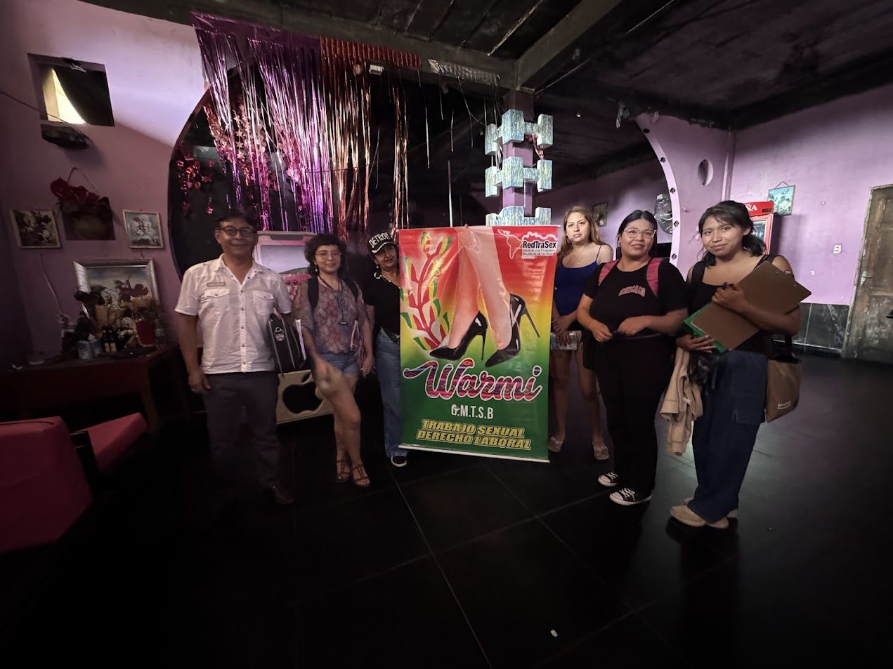
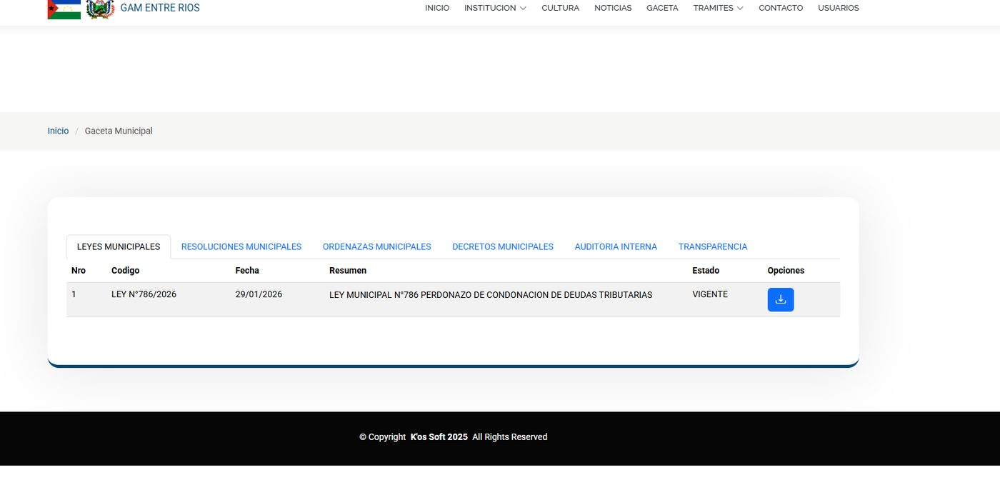
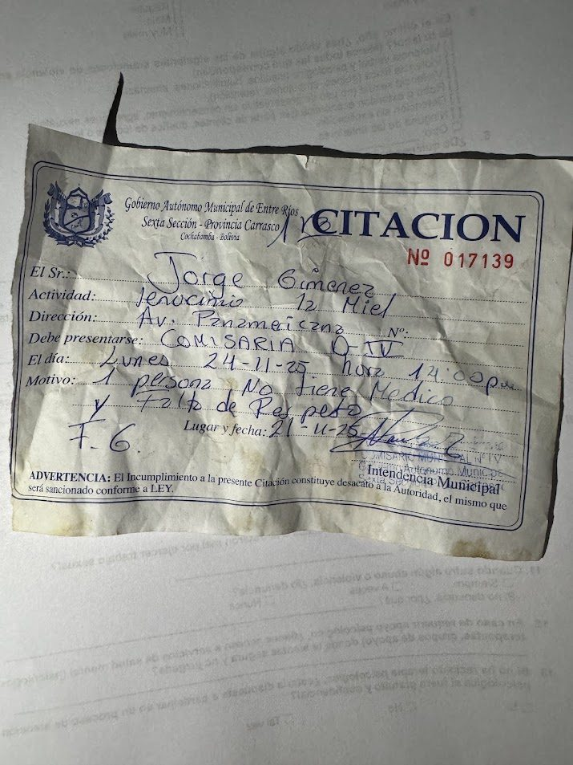

Informe de vulneración de derechos
Mujeres Trabajadoras Sexuales, Municipio de Entre Ríos
Asociación de Mujeres Trabajadoras Sexuales WARMI A.M.T.S. · Cochabamba, Bolivia
I. Resumen ejecutivo
Los días 10, 11 y 12 de julio de 2026, WARMI A.M.T.S. realizó su primera intervención territorial en el municipio de Entre Ríos, provincia Carrasco, departamento de Cochabamba (Trópico), en continuidad con su trabajo previo en Ivirgarzama y Chimoré. La intervención combinó prevención en salud sexual, encuestas estructuradas de victimización y escucha directa de testimonios.
Se documentó un patrón consistente: un sistema de tres sellos (médico, policial y de la Intendencia), de periodicidad semanal, impuesto por fuera de la autoridad sanitaria competente y confirmado en registro de audio por la propia autoridad municipal; multas de hasta Bs 700 y cobros indebidos; retención de documentos y detenciones de 8 a 12 horas por falta de sellos; barreras y maltrato en el acceso a la salud; violencia digital; una crisis de salud mental sin atención; y un testimonio directo de violencia sexual institucional. Todo ello opera sobre una normativa municipal que ni el buscador público ni la propia Alcaldía pudieron facilitar, en un contexto de vacío de certeza jurídica que amplía la discrecionalidad.
Un eje central del informe es que la exigencia de un control ginecológico semanal carece de sustento científico, contradice el estándar internacional y excede la capacidad operativa real del Hospital de segundo nivel de Entre Ríos, en un municipio con fuerte crecimiento poblacional y una población de trabajadoras sexuales mayoritariamente migrante que no está reflejada en el censo. Sobre esta base, WARMI sustenta la necesidad de un control mensual, voluntario, gratuito y confidencial. WARMI A.M.T.S. recomienda de manera expresa el cese inmediato de los controles coercitivos e ilegales ejercidos por efectivos policiales y personal de la Intendencia municipal, en tanto dichas prácticas vulneran derechos fundamentales, carecen de base normativa verificable y exceden sus competencias institucionales. Ambas instancias deben limitar su accionar estrictamente a las funciones que les son legalmente atribuidas, absteniéndose de usurpar competencias exclusivas de la autoridad sanitaria departamental (SEDES), particularmente en lo relativo a la regulación, supervisión y definición de protocolos de control en salud sexual. La continuidad de estas prácticas no solo profundiza la inseguridad jurídica, sino que también reproduce dinámicas de abuso, extorsión y violencia institucional contra una población ya altamente vulnerable.
II. Objeto del informe
El presente informe tiene por objeto documentar, con evidencia cuantitativa y cualitativa, la situación de vulneración de derechos de las mujeres trabajadoras sexuales en Entre Ríos, y aportar los elementos técnicos y jurídicos que permitan orientar una respuesta con enfoque de derechos. WARMI A.M.T.S. es una organización de base dirigida por mujeres trabajadoras sexuales, con Personería Jurídica (Decreto Departamental N° 6487, 20/12/2024), NIT 627563020, y forma parte de la Red de Mujeres Trabajadoras Sexuales de Latinoamérica y el Caribe (RedTraSex), una plataforma regional de articulación política que representa a organizaciones de trabajadoras sexuales en múltiples países y que incide activamente en la defensa de derechos humanos, el acceso a la salud y el reconocimiento laboral a nivel regional e internacional.
III. Antecedente
Los hallazgos de este informe dan continuidad territorial a lo que la Defensoría del Pueblo ya determinó en su Informe Defensorial «Criminalización del trabajo sexual: cumplimiento del artículo 40 del D.S. N° 451 durante la pandemia de la COVID-19» (2022): la usurpación indebida del control sanitario por parte de la Policía y las Intendencias, las erogaciones económicas abusivas y la exigencia de «pieza» (favor sexual) como forma de pago, calificada como violencia sexual institucional tolerada por el Estado. WARMI fue fuente de esa investigación. El mismo patrón se verifica hoy en el Trópico, con Entre Ríos, Ivirgarzama y Chimoré como escenarios documentados.
IV. Metodología
La intervención (10–12 de julio de 2026) se realizó con recursos propios y apoyo del Fondo de Acción Urgente para América Latina y el Caribe (FAU-LAC), con un equipo interdisciplinario. Se abordó a 41 mujeres trabajadoras sexuales en ocho locales y puntos de trabajo, con cobertura del 100% en la entrega de insumos de prevención (preservativos y lubricantes). Se aplicaron encuestas estructuradas de victimización con consentimiento informado, anonimato y resguardo de datos. De las 41 mujeres abordadas, 16 (39%) declinaron responder la encuesta, lo que la organización interpreta como expresión del temor a represalias. La muestra es no probabilística.
Locales y puntos de trabajo abordados en Entre Ríos
| Los Infieles | La Diabla |
| Swing | Santa Diabla |
| La Cueva | Caribe |
| La Miel | Punto G |

V. Hallazgos estadísticos
La sistematización preliminar de las encuestas aplicadas (N = 24) arroja los siguientes resultados.
V.1 Perfil y vulnerabilidad económica
Cerca de 8 de cada 10 compañeras sostienen económicamente a terceros, principalmente hijas e hijos menores. Esa carga es, precisamente, la palanca que se instrumentaliza para la coerción.
V.2 Trato institucional y violencia
| Indicador | Frec. | % |
|---|---|---|
| Trato de la Policía calificado como malo / muy malo | 16/24 | 66,6% |
| Trato de la Intendencia calificado como malo / muy malo | 13/24 | 54,1% |
| Violencia verbal y psicológica | 11/24 | 45,8% |
| Robo o extorsión económica | 10/24 | 41,6% |
| Violencia digital | 8/24 | 33,3% |
| Violencia sexual | 6/24 | 25,0% |
| Detención sin explicación | 4/24 | 16,6% |
V.3 Acceso a la salud, justicia y salud mental
| Indicador | Frec. | % |
|---|---|---|
| Evalúa su acceso a la salud como regular o malo | 19/24 | 79,1% |
| Nunca denuncia los abusos | 11/24 | 45,8% |
| Dispuesta a recibir atención psicológica gratuita y confidencial | 19/24 | 79,1% |
Donde el trato institucional es peor, la denuncia desaparece (casi la mitad nunca denuncia), y la demanda de contención psicológica es masiva y no atendida (8 de cada 10 aceptarían terapia gratuita y confidencial). En salud, además de la valoración negativa mayoritaria, las encuestas y testimonios reportan de forma reiterada que solo sellan el cuaderno sin brindar atención, daño físico durante un examen ginecológico y la obligación de comprar medicamentos en farmacias privadas.
VI. Hallazgos cualitativos
VI.1 El «sistema de los tres sellos», confirmado por la propia autoridad municipal
Para poder trabajar, las compañeras deben portar un cuaderno de control con tres sellos de periodicidad semanal: médico, policial y de la Intendencia. El propio Intendente Municipal de Entre Ríos lo confirma en registro de audio (anexo confidencial): reconoce que la Intendencia realiza el control médico, que las mujeres cada semana llegan, que se manejan los tres sellos (médico, policía e intendencia) y que su incumplimiento acarrea sanción e impedimento de trabajar.
«También está la policía… tienen que tener el sello del médico, sello de la policía, también nuestro sello de la intendencia. Los tres sellos.» — Intendente Municipal de Entre Ríos (registro de audio)
Este sistema presenta tres inconsistencias directas con la normativa sanitaria vigente que merecen ser señaladas con precisión.
Primera inconsistencia — Autoridad competente. La Ley N° 3729 de Prevención del VIH/Sida y el Decreto Supremo N° 451 (Art. 40) establecen que el control sanitario de las trabajadoras sexuales es competencia exclusiva del Servicio Departamental de Salud (SEDES) a través de su Programa Departamental ITS/VIH/Sida, en el departamento de Cochabamba. Ni la Policía Boliviana ni la Intendencia Municipal tienen atribución alguna para exigir, sellar, verificar ni retener un documento sanitario. La Defensoría del Pueblo ya lo determinó expresamente en su Informe Defensorial de 2022. Que la propia autoridad municipal reconozca en audio que «la Intendencia hace el control médico» no es una irregularidad menor: es la admisión de una usurpación de funciones.
Segunda inconsistencia — El instrumento utilizado carece de validez oficial. El control sanitario legalmente establecido debe materializarse en un carnet de salud emitido por el SEDES con los datos clínicos de la persona, las fechas de los exámenes realizados y la firma del profesional de salud responsable. Lo que se impone en Entre Ríos es un cuaderno informal, sin formato oficial, sin respaldo institucional del sistema de salud, cuya única «certificación» son los sellos de la Policía y la Intendencia: dos autoridades que no tienen competencia sanitaria. Este cuaderno no acredita ningún examen clínico real; acredita únicamente que la trabajadora pagó y se presentó. No es un instrumento de salud pública: es un instrumento de control administrativo y de recaudación.
Tercera inconsistencia — La periodicidad semanal no responde a ningún criterio sanitario aplicable. La Circular ITS/VIH/SIDA/30/08/06 del Ministerio de Salud, que regula los controles en el marco del D.S. 451, no establece una periodicidad semanal. Condiciona la frecuencia del control ginecológico al potencial y la capacidad del establecimiento de salud, con examen laboratorial completo cada tres meses y examen de ITS/VIH cada seis meses. El propio Intendente reconoce que en Cercado e Ivirgarzama el control es mensual, y que aquí es por semana, sin ofrecer ninguna justificación sanitaria para esa diferencia. Una frecuencia más gravosa que la del programa departamental, impuesta por una autoridad sin competencia sanitaria, no tiene base legal ni técnica.
En síntesis: el sistema de los tres sellos no es un control sanitario. Es un esquema informal, sin sustento legal, operado por autoridades sin competencia, que usa un cuaderno sin validez oficial como mecanismo de control y de recaudación, desplazando el derecho a la salud por una lógica punitiva y extractiva.
VI.2 Una normativa que no se puede verificar
El Intendente refiere que la actividad se rige por un «Reglamento de Lenocinios» municipal. Sin embargo, dicha normativa no aparece en los registros públicos ni pudo ser facilitada por la propia Alcaldía cuando WARMI la solicitó. Un régimen de sellos, multas, detenciones y clausuras que sanciona a las trabajadoras no puede sostenerse en una norma que no es pública ni accesible: ello vulnera el principio de legalidad y la seguridad jurídica (CPE, arts. 109, 116 y 117), según los cuales nadie puede ser sancionado sino en virtud de una norma previa, pública y cierta.

VI.3 Detenciones de 8 a 12 horas, retención de documentos y confinamiento al local
Las compañeras que carecen de algún sello son sometidas a detención en celda policial reportada entre 8 y 12 horas y a la retención de su carnet o cuaderno, condición de facto para trabajar. Estas privaciones de libertad no responden a orden judicial ni a flagrancia: la falta de un sello administrativo no es causal de arresto conforme al artículo 23 de la CPE. El «cuaderno», además, está atado a un solo local, lo que impide trabajar en otro establecimiento.
«La policía se los llevó los cuadernos y nos dejó dos noches sin trabajo.» — Testimonio recogido en Entre Ríos (encuesta, julio 2026)
VI.4 Multas y cobros indebidos
Las mujeres reportan multas por la falta de sellos que, sumadas, alcanzan hasta Bs 700 (Bs 500 de la Intendencia y Bs 200 de la Policía), además de la derivación de facto a laboratorios y farmacias privadas.
| Carga impuesta | Actor que la impone | Monto / condición |
|---|---|---|
| Multa por falta de sello | Intendencia Municipal | Hasta Bs 500 |
| Multa por falta de sello | Policía Boliviana | Hasta Bs 200 |
| Retención de carnet / cuaderno | Policía / Intendencia | Pago para su devolución |
| Detención en celda | Policía Boliviana | 8 a 12 horas por falta de sello |

VI.5 Violencia sexual institucional: el pago en especie
El hallazgo más grave es un testimonio directo de violencia sexual institucional. Una compañera relata que, contando con su control médico pero careciendo del sello exigido, fue retenida por un capitán de policía que, en lugar de aceptar el pago en dinero, le exigió pagar en especie con su cuerpo a cambio de dejarla en libertad. La compañera se negó.
«¿Querés que te suelte? Entonces tenés que cooperar… No quería dinero. Era como obsesionado, y era capitán.» — Testimonio anonimizado, compañera de Entre Ríos
Este relato reproduce el patrón que la Defensoría ya calificó en 2022 como violencia sexual institucional tolerada por el Estado. Los hechos podrían configurar, entre otros, los delitos de concusión (Art. 151 CP), cohecho (Arts. 145–146 CP), abuso de autoridad (Art. 153 CP) y violencia sexual, cuya calificación corresponde a las instancias competentes.
VI.6 Estigma institucional, violencia digital e impunidad
El propio Intendente expresa, en el mismo registro, una visión instrumentalizadora de las mujeres sugiriendo que su presencia «evitaría» agresiones sexuales a otras, lo que revela el marco de estigma desde el que opera la autoridad. En paralelo, un tercio de las compañeras reportó violencia digital (difusión de fotografías sin consentimiento por un guardia de local, creación de cuentas falsas con su nombre real), y casi la mitad nunca denuncia, porque la Policía —a la vez agresora, recaudadora y receptora de la denuncia— no ofrece garantía alguna.
«¿Acaso cuando a un cliente le está pegando a una viene la policía? No, faltas así no vienen. Nunca. Donde hay plata, ahí sí están.» — Testimonio recogido en Entre Ríos (julio 2026)
VII. La frecuencia de los controles: por qué debe ser mensual, no semanal ni quincenal
El control ginecológico semanal es uno de los mecanismos centrales de coerción. Según los testimonios, ese control no se realiza en favor de la salud de las compañeras: muchas veces ni siquiera son examinadas; solo se sella el cuaderno. La periodicidad semanal no cumple una función sanitaria, sino de control y recaudación. Cuatro líneas de evidencia sustentan que la frecuencia debe ser mensual.
VII.1 El estándar internacional es de 3 a 6 meses, y voluntario
- OMS: recomienda el tamizaje periódico de ITS y la prueba de VIH para trabajadoras sexuales cada 3 a 6 meses, y es explícita en que el tamizaje no debe ser coercitivo ni obligatorio (OMS/UNFPA/ONUSIDA/NSWP, 2012; OMS, Directrices unificadas para poblaciones clave, 2022).
- CDC (EE.UU.): para poblaciones de mayor exposición recomienda tamizaje cada 3 a 6 meses, no con periodicidad menor.
- ONUSIDA: las regulaciones de salud dirigidas al trabajo sexual no deben exigir procedimientos médicos obligatorios. Un control semanal impuesto como condición para trabajar es, por definición, coercitivo.
- Evidencia comparada: las revisiones sistemáticas muestran que aumentar la frecuencia por debajo del rango de 3 a 6 meses no aporta beneficio proporcional. Un control semanal no detecta más ni previene mejor: solo multiplica la carga y el costo para la persona.
VII.2 La propia norma boliviana condiciona la periodicidad a la capacidad del establecimiento
La Circular ITS/VIH/SIDA/30/08/06 del Ministerio de Salud referida en el Informe Defensorial de 2022 no fija un control semanal. Establece un control ginecológico que debe determinarse según el potencial y la capacidad del establecimiento de salud, con examen laboratorial completo cada tres meses y examen de ITS y VIH cada seis meses. Es decir, la propia norma remite la frecuencia a la capacidad real del hospital: donde esa capacidad es limitada, la periodicidad debe ser menor, no mayor.
VII.3 La capacidad real del Hospital de Entre Ríos no sostiene controles semanales ni quincenales
El Hospital de Entre Ríos es un establecimiento de segundo nivel con servicio de ginecología-obstetricia (según el diagnóstico situacional y el plan operativo del propio hospital, cuenta con alrededor de tres especialistas gineco-obstetras y un equipo aproximado de sesenta personas). Sin embargo, su propio análisis FODA reconoce debilidades operativas críticas: falta de equipamiento en quirófano, carencia de materiales para el control de signos vitales y déficit de personal de enfermería, además de largas esperas, riesgo de infección intrahospitalaria e insatisfacción de las pacientes. Esta capacidad instalada no permite absorber un control ginecológico semanal ni quincenal de la población de trabajadoras sexuales sin saturar el servicio y desplazar la atención materno-infantil y de emergencias obstétricas.
A esa tensión se suma el crecimiento poblacional del municipio: según el INE, Entre Ríos pasó de unos 31.300 habitantes (Censo 2012) a 45.780 habitantes (Censo 2024), sobre una superficie de 1.322,74 km², elevando la densidad de ~23,8 a ~34,6 hab/km² (un crecimiento cercano al 46% en doce años). El hospital de segundo nivel debe atender esa demanda creciente y, además, las derivaciones de otros distritos y municipios.
Un factor decisivo, y frecuentemente invisibilizado, es que las cifras del censo contabilizan solo a la población residente. La población de trabajadoras sexuales de Entre Ríos es mayoritariamente migrante —proviene sobre todo de Santa Cruz y el oriente—, como reconoce el propio Intendente Municipal en el registro de audio y como refleja la composición del municipio (según el Gobierno Autónomo Municipal, cerca del 77% de la población proviene de otras regiones del país). Se trata, en buena medida, de una población flotante que no está reflejada en el censo y que, por tanto, no fue considerada en la planificación de la capacidad del hospital. Exigir a esta población un control semanal (a) sobrecarga un servicio ya tensionado, (b) recae sobre personas con alta movilidad territorial para quienes un control semanal es materialmente inviable, y (c) confirma que la finalidad del esquema no es sanitaria, sino de control.
VII.4 Conclusión y propuesta de WARMI
Cruzando las cuatro líneas —estándar internacional, condicionalidad de la norma boliviana a la capacidad del establecimiento, capacidad real limitada del Hospital de Entre Ríos y naturaleza migrante de la población—, la conclusión es inequívoca: la exigencia de un control semanal (o cada cinco días, o quincenal) carece de todo sustento sanitario y jurídico. WARMI propone:
- Periodicidad máxima mensual, nunca semanal ni quincenal, en línea con la práctica del Programa ITS/VIH del SEDES Cochabamba y de los municipios de Cercado e Ivirgarzama, y por encima incluso del estándar internacional de 3 a 6 meses.
- Carácter voluntario, gratuito y confidencial, en beneficio de la salud de la persona, con provisión gratuita de insumos (Ley N° 3729) y sin condicionar el derecho al trabajo.
- Competencia exclusiva de la autoridad sanitaria (SEDES Cochabamba — Programa Departamental ITS/VIH), en establecimientos del SUS, retirando toda función de control de la Policía y la Intendencia.
- Examen efectivo, no simbólico: consejería, tamizaje y tratamiento reales, no un mero sellado del cuaderno; y fortalecimiento de la capacidad gineco-obstétrica del hospital (equipamiento y enfermería).
VIII. Encuadre jurídico
Sin perjuicio de la calificación que corresponda a las instancias competentes, los hechos comprometen de manera concurrente:
- CPE: arts. 14, 15 (integridad física, psicológica y sexual), 18 (salud), 21 (privacidad), 22 (dignidad), 23 (libertad; no detención sin orden judicial ni flagrancia), 46 (trabajo digno), 109, 116 y 117 (legalidad y seguridad jurídica).
- Ley N° 348: violencia física, psicológica, sexual, económica/patrimonial e institucional, incluida la ejercida por servidores públicos.
- Ley N° 3729 (VIH/ITS): dotación gratuita de insumos y garantía de acceso a diagnóstico y tratamiento; el control sanitario es beneficio de la persona, no requisito punitivo.
- D.S. N° 451 (art. 40), Resolución Bi-Ministerial N° 0417 y Circular ITS/VIH/SIDA/30/08/06: competencia sanitaria del SEDES; ni la Policía ni la Intendencia pueden exigir o retener el carnet; la periodicidad se determina según la capacidad del establecimiento.
- Código Penal: concusión (Art. 151), cohecho (Arts. 145–146) y abuso de autoridad (Art. 153), a valorar por la vía correspondiente.
- Instrumentos internacionales: Convención de Belém do Pará (arts. 3, 4, 6 y 7); CADH (arts. 5, 7, 11, 24, en relación con el art. 1.1); Protocolo de San Salvador (arts. 6 y 10).
IX. Conclusiones y recomendaciones
Los hallazgos evidencian un régimen de control coercitivo, sin base normativa verificable, ejercido sobre las mujeres trabajadoras sexuales de Entre Ríos. A partir de ellos, y sin dirigirse a una autoridad en particular, se plantean las siguientes recomendaciones según el ámbito de competencia:
En materia de salud
- Reconocer la competencia exclusiva de la autoridad sanitaria (SEDES Cochabamba — Programa ITS/VIH) sobre el control, retirando toda injerencia de Policía e Intendencia.
- Establecer una periodicidad máxima mensual, voluntaria, gratuita y confidencial, conforme a la evidencia científica y a la capacidad real del establecimiento, eliminando toda exigencia semanal o quincenal.
- Garantizar la provisión gratuita de pruebas de VIH e ITS, tratamiento e insumos (Ley N° 3729), descentralizar la atención a los centros del SUS, y asegurar atención efectiva y trato digno, no solo sellar el cuaderno.
En el ámbito municipal
- Cesar el sistema de los tres sellos, los cobros y las multas vinculadas al control sanitario, y toda retención de documentos o detención por falta de sellos.
- Limitar la Intendencia a sus funciones propias —higiene y funcionamiento del local, horarios—, sin injerencia en la salud de las trabajadoras, y capacitar a su personal en derechos humanos, género y no discriminación.
- Hacer pública y accesible la normativa municipal vigente o, en su defecto, adoptar una con enfoque de derechos, con participación de WARMI y de las propias trabajadoras sexuales, garantizando seguridad jurídica; y como horizonte de mayor alcance, impulsar la elaboración y aprobación de una ley municipal que reconozca y proteja el trabajo sexual, estableciendo condiciones dignas, no discriminatorias y con plena garantía de derechos.
En materia de justicia y derechos humanos
- Investigar los hechos que podrían configurar concusión, cohecho, extorsión, abuso de autoridad y violencia sexual, con protección de testigos y sin revictimización.
- Conformar una mesa técnica interinstitucional de seguimiento (autoridad sanitaria, municipio, justicia, derechos humanos y WARMI) para verificar la implementación y extender la protección a zonas emergentes del Trópico.
X. Anexos y referencias
Se proporcionará, mediante petición y bajo reserva de confidencialidad para proteger la identidad y la seguridad de las compañeras según sea necesario:
- Matriz anonimizada de casos (código, fecha, local, autoridad involucrada por función, derecho vulnerado y evidencia disponible).
- Tabulación de las encuestas estructuradas aplicadas en Entre Ríos (julio 2026).
- Transcripciones anonimizadas de los testimonios recogidos en terreno.
- Registro de audio de la entrevista con la autoridad municipal, que confirma el sistema de tres sellos y la periodicidad semanal.
- Informes previos de WARMI sobre Ivirgarzama y Chimoré (2025) y copia del Acta de la reunión interinstitucional de Ivirgarzama.
Referencias técnicas citadas
- OMS, UNFPA, ONUSIDA y NSWP (2012). Prevención y tratamiento del VIH y otras ITS para trabajadoras y trabajadores sexuales en países de ingresos bajos y medios: recomendaciones para un enfoque de salud pública.
- OMS (2022). Directrices unificadas sobre la prevención, diagnóstico, tratamiento y atención del VIH, las hepatitis virales y las ITS para poblaciones clave.
- ONUSIDA (2009, act. 2012). Nota de orientación del ONUSIDA sobre el VIH y el trabajo sexual. ONUSIDA (2024). Ficha informativa: VIH y trabajo sexual.
- CDC (EE.UU.). Recomendaciones de tamizaje de ITS: cada 3 a 6 meses para poblaciones de mayor exposición.
- Ministerio de Salud (Bolivia). Circular ITS/VIH/SIDA/30/08/06.
- INE (Bolivia). Censo de Población y Vivienda 2012 y 2024 — municipio de Entre Ríos (Carrasco).
- Hospital de Entre Ríos. Diagnóstico situacional y plan operativo (datos de capacidad y FODA).
- Defensoría del Pueblo (2022). Informe Defensorial «Criminalización del trabajo sexual: cumplimiento del artículo 40 del D.S. N° 451, durante la pandemia de la COVID-19».
Fitti Lino Terceros
Presidenta y Representante Legal
Asociación de Mujeres Trabajadoras Sexuales WARMI (WARMI A.M.T.S.)